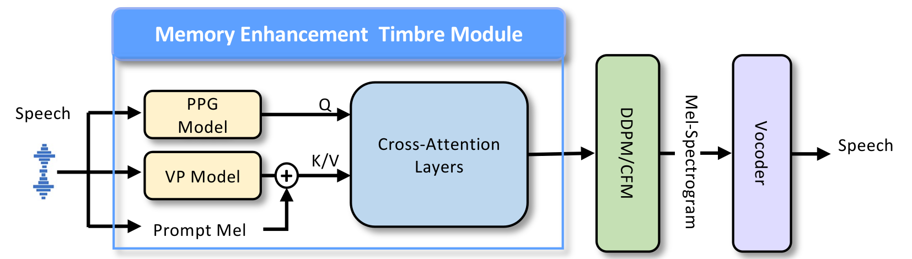

Takin: A Cohort of Superior Quality Zero-shot Speech Generation Models
[Paper] [Official Website]
Everest Team
Ximalaya Inc.
Abstract: Its core comprises three innovative models: Takin TTS, Takin VC, and Takin Morphing. Takin TTS is primarily used for generating highly expressive audio content, with control over tone and emotion; Takin VC focuses on timbre conversion of real human data, complementing the TTS content production ecosystem. Takin TTS and Takin VC excel in zero-shot voice generation, cross-language voice cloning, and instruction following. These models incorporate the latest LLMs technology in the industry, achieving significant improvements over the previous generation of voice content production. We deeply integrate our self-developed capabilities into fields such as audiobook production, podcast interaction, and virtual avatar customization, advancing the practical application of audio large language models.
Overview of Takin TTS
An overall summary during the training process of Takin TTS model. This includes pre-training phase, fine-tuning phase, instruction fine-tuning phase, and reinforcement learning phase, achieving high-quality hyper-realistic audio generation.
Audio Content Production
| 利用Takin-TTS生产的有声专辑 （Audiobook produced using Takin-TTS） | ||||
|---|---|---|---|---|
欢迎到喜马拉雅平台收听我们专辑的完整版。Welcome to the Ximalaya platform to listen to the full version of our album.[Link] |
||||
欢迎到喜马拉雅平台收听我们专辑的完整版。Welcome to the Ximalaya platform to listen to the full version of our album.[Link] |
||||
欢迎到喜马拉雅平台收听我们专辑的完整版。Welcome to the Ximalaya platform to listen to the full version of our album.[Link] |
||||
| 利用Takin-TTS生产的多播多风格有声内容 （Multicast audio content produced using Takin-TTS） | ||||
哎哟，这位客官，您的眼光可真是独到啊！哈哈哈哈，小店这匹锦缎可是苏州最顶尖的织工亲手打造，每一丝每一缕都透着精致，这样的宝物，被您一下子就瞧上了，真是慧眼识珠啊！我敢说，只有像您这样眼光绝顶的客官，才能把这锦缎的美展现得淋漓尽致！ |
父亲：你这个混蛋，我们会让你付出代价的！ 反派：你们以为这样就能打击到我？不过是做生意罢了，我还会在乎这个吗？ 母亲：生意？你说的是我们的孩子，是我们的心肝宝贝！求求你告诉我们孩子在哪！ 父亲：你这个畜生，根本不配做人！你知道我们为了找到孩子付出了多少吗？ 反派：哼，怪我吗？是你们自己没管好小孩，也不找找自己的原因。 |
|||
| 利用Takin-TTS生产的单播多风格有声内容 （Unicast multi-style audio content produced using Takin-TTS） | ||||
“且住，我罗老歪是行伍中人，图的是旗开得胜，最忌无功而返，既然带这弟兄们来了，空手回去怎么交代？干脆一不做二不休，从上边进不去，就从山底挖开墓门，一步步铺着石灰过去，这在兵法上叫步步为营，虽是吃些功夫，却最是没有破绽，就算墓中有条六翅蜈蚣，我操他奶奶，老子叫手下几道排枪打过去，也管保射它百十个透明窟窿。” 罗老歪说完，正好看见红姑娘在晚霞中容颜之美，加上眉宇间的英气，实是不可方物，忍不住又动了先前的念头，他知道红姑娘最大的心愿，是在大上海重振月亮门的古彩戏法，便劝她道：“咱们盗墓取财，就是为了在乱世中成就一场大业，将来等天下平定了，你罗大哥和陈总把头免不了封王拜将，到那时，你自是要去灯红酒绿的上海滩，凭妹子你这小身段和月亮门古彩戏法的手段，加上我不惜血本的来捧你，那真是要钱给钱，要人给人，一定捧你捧得象屌一样红……” 罗老歪话未说完，脸上就中了红姑娘一记响亮的耳光，她出手如电，罗老歪脸颊被打得热辣辣的疼，歪斜的嘴角险些被这一巴掌给抽正了，罗老歪虽是自知刚才一时兴起，说走了嘴露出脏话，但自打他当了土皇帝般的军阀头子，谁又敢动他罗帅一根汗毛？不禁恼羞成怒，当场就想掏枪毙了这不识抬举的女子。 |
||||
诸君夜半无眠，心中或有所忧，或有所思，无意如是，睡眠何其重？然夜半辗转，难以入梦，无有三问。一问，何故夜半难媚，心烦如潮，何以速入佳梦？二问，何故漫漫长夜，时时惊醒，何以得梦安稳？三问何故昼间倦乏，腰酸背痛，何以梦乡深怡。 |
||||
| 利用Takin-TTS生产聊天风格的播客有声内容 （chat-style podcast audio content produced using Takin-TTS） | ||||
喜小橙: 谈朋友，比如说交朋友，交女朋友一般都是你看男的嘛，一般都是比较处于一个宠爱人的这么一个角色。对，保护女孩儿，什么事儿都替女孩儿想的，然后我觉得就是我也想体验一种那种被保护的感觉。 喜小楠: 嗯，但是当她真的保护你，就很多方面都比你强的时候，你心里面你还是会有点儿不舒服，不是说你希望她不好或者怎么着，你就是相比之下会觉得自己就是不舒服。就觉得女朋友那么好，我觉得我哪儿都不行，会有那种～ |
||||
| 利用Takin-TTS生产的语音翻译有声内容 （Voice-translated audio content produced using Takin-TTS） | ||||
| 英文原版 (EN) | 中文译版 (CN) | |||
Chapter 1 Once when I was six years old, I saw a magnificent picture in a book called True Stories from Nature about the primeval forest... |
第一章 我六岁的时候，在一本叫《自然的真实故事》的书中看到一幅描绘原始森林的壮丽图画。图中是一条蟒蛇正在吞食一只动物...... |
|||
| 单图驱动技术扩展TTS合成音频为视频演绎（Extend Takin TTS generated content into video with Single Image Talking Head Generation） | ||||
|
|
||||
Paralinguistic Sound Generation
The performance of the audio large model in paralinguistic sound effects is significantly better than old fashioned TTS system..
| Text Prompt | Generated Audio | Text Prompt | Generated Audio | |
|---|---|---|---|---|
| <喵>这里有一只小猫，好可爱噢。 | <惊恐>别再说了！<惊恐>大晚上的说这些，你不害怕吗？ | |||
| 前面的沙滩上，好像有个黑影，<嘘>，我悄悄过去瞧瞧看，到底是什么东西。 | <发抖>不要吃我，<发抖>我的肉是臭的。 | |||
| <冷哼>你别给我瞎逼逼了，你很牛吗，你很高贵吗？ | <冷哼><害怕的哭>都说了我没有啊，没有啊！<害怕的哭>这里风好大，我好害怕，我要回家。 | |||
| <冷笑>众生皆苦，本以为你是贪图享乐来到人间，结果却是一场浩浩荡荡的渡劫。 | <钦佩的笑>不愧是跟我来自同一个家乡的人，这都看出来了，了不起！ | |||
| <疼痛>我的脚！ | <开心的笑>我听着你说得头头是道，<开心的笑>是不是有真实的经验啊，跟大家分享一下呗。 |
Zero-shot Capability
| Use Case | Text Prompt | Audio Prompt | Generated | |
|---|---|---|---|---|
| 耳语 | 闭上你的眼睛，慢慢地吸气，感受空气填满你的肺部和腹部。然后慢慢地呼气，用你的腹部推动气体，尽可能地呼尽空气。我们一起来做五次深呼吸，每次都尽可能地放松自己，感受空气的流动。 | |||
| 四川话 | 我跟你讲哈，昨个儿个下午，老子在街上头溜达，突然间瞅见一帮娃儿撒欢儿玩耍。我滴个乖乖，那些小崽子可咋个萌得很嘞！有个小不点儿，估摸才到我腰间，圆滚滚的像个小肉球，看得我直想掐一把。 | |||
| 天津话 | 前儿个我到狗不理去买包子，排队的人可真够呛，从门口排到了胡同那头儿！我寻思，这么多人，得等到什么时候去啊？ 正发愁呢，碰见我那个老街坊老王头儿。这老小子可有门路，一看见我就嚷嚷："哎呀，老姐们儿，您可来啦！跟我来吧，我给您开后门儿。" | |||
| 北京话 | 前儿个我去五大道溜达，您猜我碰着啥啦？一群老外骑着自行车，穿得花里胡哨的，跟过大年似的。 我寻思这是咋回事儿啊，就凑过去瞅瞅。哎呦我的妈呀，老外们嘴里还叽里呱啦的说着天津话呢！ | |||
| 广西话 | 我刚到菜市场，就看到一大堆人围着一个摊位看热闹。我凑过去一看，原来是个老表在卖芒果。我就问他："阿叔，这芒果是不是很贵咯？" 他笑着说："不会啦，便宜得很啦。买三送一，你要不要来几个试试看？" | |||
| 台湾腔 | 庄子被视为一个能够与天地精神独往来的智者。他的生活虽然穷困，却能超越贫困，乐在其中。庄子以其寓言和小故事而闻名，这些故事不仅表达了他的观点，还嘲讽了那些追名逐利的人。他对功名和利禄持批判态度，甚至对死亡也有自己独到的见解。 | |||
| 猴哥 | 八戒，我只想回花果山过我的逍遥日子，奈何那14级台风，把我花果山的猴孙们，都刮没影了。 | |||
| 八戒 | 师兄啊，这14级台风，这，真的有这么厉害吗？ | |||
| 华妃 | 《吐槽大会》以往的主嘉宾都是一个人，这次是我们两个人。 |
Effects of Continual Supervised Finetuning
| Text Prompt | Audio Prompt | Before CSFT | After CSFT | |
|---|---|---|---|---|
| 我真的很喜欢吃西瓜，贼好吃！ | ||||
| 说来也巧，那个暴风之夜，一个神秘老人来到杰克的四层皇宫中，预言说今晚杰克会去一个巨人国。杰克大怒，将他赶出宫去。 到了晚上，一阵狂风吹过，杰克不知怎么地真的来到了一个地方。只见这里草都像树一样矮小，房顶都快碰到天了，难道这就是巨人国？他爬到了一座矮小的秃山上，歇息了一会儿，正预备上路时，一只巨大的手从天而降抓住了杰克。 | ||||
| 小宝宝听了，甜甜地笑了，静静地沉入梦乡。在这个美好的梦境中，他渐渐忘记了白天的烦恼，享受美好的睡眠时光。 | ||||
| 肖锵剑术虽超群而凌厉，待人接物却是鱼龙帮上下公认的和善，脾气也好，再者身边女子是他关门弟子，脸上露出一抹会心笑意，说道：“为师这辈子也才去过一趟北莽，想起来也没啥可称道的经历，倒是公孙杨那只老闷葫芦，名声其实都是在那边闯荡出来的。” 极为内秀的女子显然便是刘老帮主孙女刘妮蓉，讶异道：“公孙客卿不是旧西蜀人吗？” 肖锵摸了摸剑鞘，轻声唏嘘道：“谁家没有一本难念的经，闷葫芦不愿说罢了。” 刘妮蓉转头瞥了一眼马车，在帮里便一直深居简出的公孙杨就独坐在车上，重新转头后放低声音问道：“师父，你说这一车货物本钱是多少？” 肖锵笑道：“就货物本身来说，便是在富得流油的江南道上，也不便宜，大概得有六七千两才拿得下来，加上这北凉到江南一去一来，与各路牛鬼蛇神的过境打点，没有一万两银子是不可能的。 |
Instruction Style Control
| Instruction | Female | Male | |
|---|---|---|---|
| 说话人带着笑意，节奏欢快，洋溢着开心的情绪 | 哎哟，我懂你意思了，哈哈哈，我帮你总结一下，你看看我说得对不对哈！ |
这是我一直以来的梦想，谢谢你老宋。你让我来当主演这消息一旦传出去，绝对可以登上各大新闻报纸的头条，号召力绝对要远超那个什么李修。 |
|
| 说话人带着哭腔，慢慢地说，语气中充满悲伤的情感 | 都是我不好，要是我乖乖的和紫华山的人走，姐姐和冯超大哥也不会被他们抓进去啊。 |
就算我们失败了，我也永远不会忘记那一日。母亲带着我已经逃到了让我们都心生期望之地。可只住下了几天，许久不曾出现的袁金红，竟然出现在我们面前，并且无论我如何的哀求, 她也没有放过母亲。 |
|
| 说话人语气傲慢，娓娓道来的语速中充满深深的厌恶和不屑 | 这过分啦！江森老爷不明摆着耍赖嘛！我看这江家几个做长辈的没有半点长辈的样子，只要能弄到好处，叫他换个爹都成，真真是不要脸。自打他们搬过来了，就鸡飞狗跳的。他们不来，咱们宝灵城安稳的很，偏他们一来就天天闹。我儿子要跟江家这几个似的，我非得打死他不可。 |
他总是一副很骄傲的样子，也不知道他在得意些什么，要不是看在我哥的面子上我还真是懒得理他！ |
|
| 说话人语气急切，情绪激动，表现出非常气愤的情绪 | 那李公子当真可恨至极！今日诗会上，竟当众讥讽我所做之诗浅薄无趣，还道我才学浮浅，不通文理。 |
两个儿子被欺负成这个样子，你不敢对秦文德那一家子发火，居然还瞪我?你也算个男人？ |
|
| 说话人带一点哭腔，语气中充满了恐惧害怕 | 林公子是我有眼不识泰山，求求您了放我一条生路吧！ |
你到底是什么人？你有什么目的？你要做什么？ |
Effects of Reinforcement Learning
| Audio Prompt | Text Prompt | Before RL | After RL | |
|---|---|---|---|---|
| 因为天路规则，只有所有人的实力都会被压制在圣人境以下，所以天路第一段，每一城池附近都会开辟出轮转、阴阳、教主三大战场！ (Stress Alignment) | ||||
| 其衡量的维度包含甚多，其中包括天赋、背景、潜力、血脉、根骨等等要素。 (Pronunciation Alignment) | ||||
| 方岳冷嗤一声，对于这主动跳出来|家伙很是不屑、 (Prosody Alignment) |
Overview of Takin VC

A schematic diagram of the Takin VC overall structure. Takin VC can accept prompt audio of around 15 seconds and convert the original audio content into the target speaker's voice.
Zero-shot Voice Conversion
| Type | Source | Prompt | Generated | |
|---|---|---|---|---|
| [CN] Male-to-Male | ||||
| [CN] Male-to-Female | ||||
| [CN] Female-to-Female | ||||
| [CN] Female-to-Male | ||||
| [EN] Male-to-Male | ||||
| [EN] Female-to-Female |